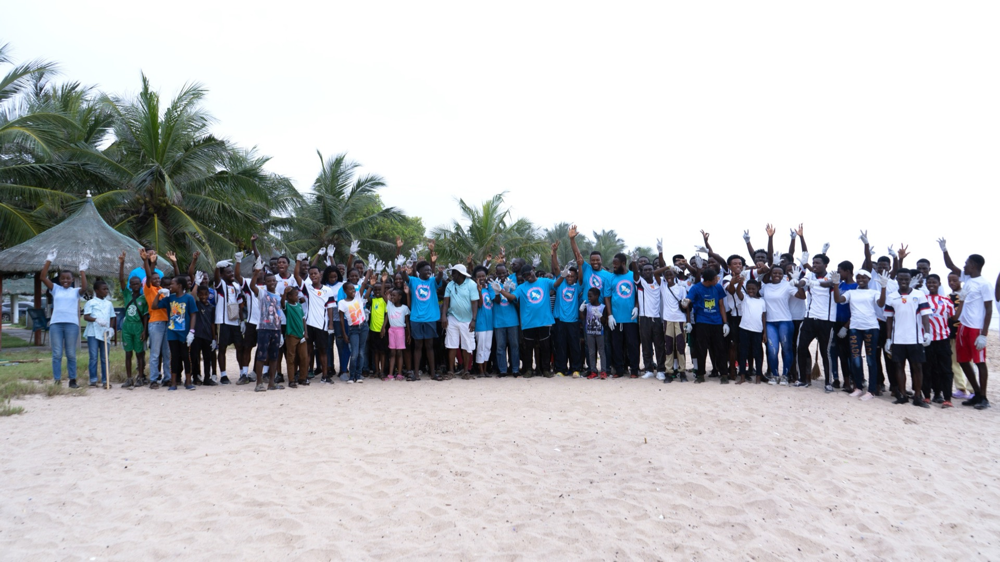

Collection
Burned in the open
Plastic that nobody collects is burned in the open or left to landfill. Every kilogram burned puts around three kilograms of CO2 into the air, on top of the dioxins and particulates breathed by whoever lives nearest to it.
Worldwide, approximately 400 million tons of plastic waste is discarded and improperly recycled every year.
✕ Gone, and counted as emissionsUnfair middleman takes it
Collected without GREENCO, plastic moves through middlemen who put informal waste pickers to work and pay them unfairly to keep a high margin on what those pickers gathered.
✕ Value captured before it startsBooked, collected, paid direct

GREENCO bypasses middlemen entirely. It connects waste generators straight to paid Green Agents who come and collect, so the money reaches the person who did the work rather than whoever stood in between.
Households, schools and businesses book a pickup. A Green Agent fills the order in their own vehicle and earns from it.